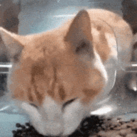
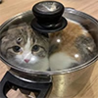

쭈인님 날로 먹는 건 위험하다옹~
쭈인님 날로 먹는 건 위험하다옹~


삶을려면 솥에 된장 풀어야 겠다
좆냥이쉑 사람 먹는걸 건드리네

물 올리자
푹 익으렴

한번 삶았냐

칼아저씨 도와줘!!
삶아보자! 탈리아!
무늬가 고양이가 아닌거 같아
벵갈 고양이. 삵이랑 교잡해서 나온건데 활동량 어마어마함
삶기 전에 털부터 떼자
대가리 인간인간펀치로 존나 패야함
널 삶아야 한다는 거지?
고양이도 터그놀이를 하누 ㅋㅋ
내입에.. 내입에
삶아라